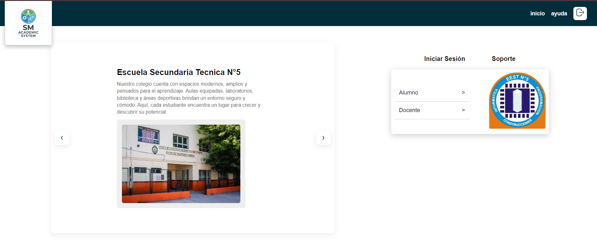

Sistema Académico SM
Desarrollé una solución integral para digitalizar la administración escolar. El sistema centraliza promedios, asistencias y boletines, resolviendo la falta de comunicación entre directivos, docentes y alumnos mediante interfaces personalizadas para cada rol.
Code